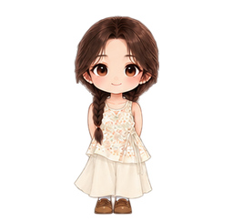
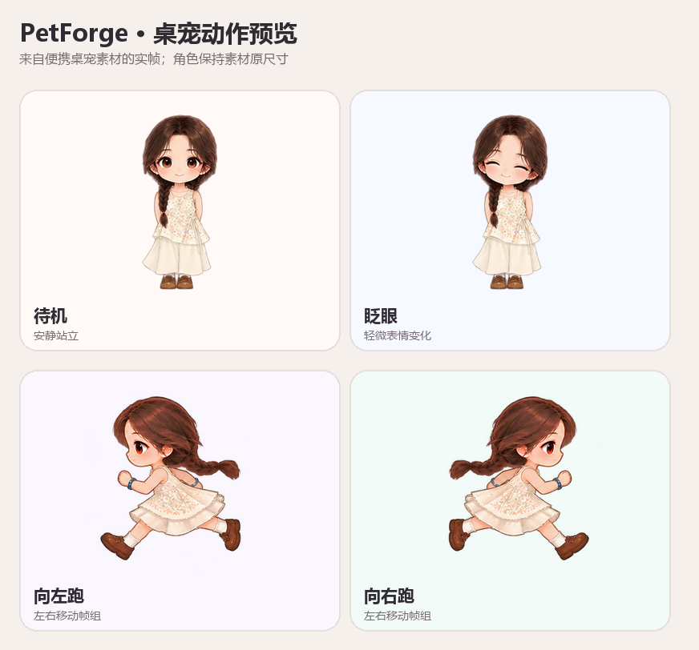
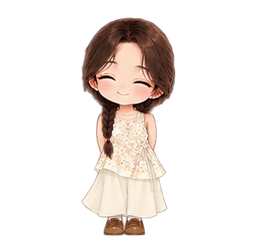
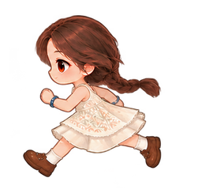

01 / IMPORT
导入角色图片
在本地网页编辑器里上传图片。默认开发流程把原图和生成文件保存在自己的电脑。
PetForge 是一款开源桌宠创作工具。上传角色图片，在本机预览形象和动作，再把透明桌宠放到整个电脑桌面上。

先选一张清晰的人物照片，完整查看原图，再带入本机创作器制作卡通角色和桌宠。照片不会上传到这个公开网站。
本机创作器需先安装并启动。网页内选图不会自动生成新角色，也不会让宠物出现在浏览器窗口外。
目前提供开发版源码。按 Windows 安装说明准备 Node.js、Python 和 Godot，启动项目后，再打开本机创作器并导入下载的 .petforge.json 文件。
Copy-Item .env.example .env .\scripts\setup.ps1 pnpm dev
下面是这个定制示例当前接入桌面运行时的动作素材。待机、眨眼和左右跑动都可以直接查看；跑步帧组也保留在仓库里，方便继续调整。




PetForge 正在搭建一条本地创作流程：图片处理、形象预览、桌面运行各自独立，便于用户在生成后确认和修整。
在本地网页编辑器里上传图片。默认开发流程把原图和生成文件保存在自己的电脑。
查看透明角色与已有动作，再继续调整角色外观和动作素材。任意照片的自动拆分与绑骨仍在规划中。
Godot 桌面运行时支持透明窗口、拖动与屏幕内移动，可独立于编辑器显示。
仓库包含 Next.js 编辑器、FastAPI 本地服务、共享桌宠格式和 Godot 透明桌面运行时。照片转卡通目前是本地调色、轮廓与描边处理；不能保证任意照片都自动变成高质量动漫形象。
网页支持参考图片的本地预览和参考文件保存；抠图、漫画滤镜与桌面运行由本机创作器完成。上方动作属于定制示例，任意照片的 AI 卡通重绘、身体补全与自动动作绑定仍在开发。
欢迎查看源码、阅读技术文档或提交改进建议。首次运行需要在 Windows 上安装 Node.js、Python 和 Godot；完整步骤见项目 README。